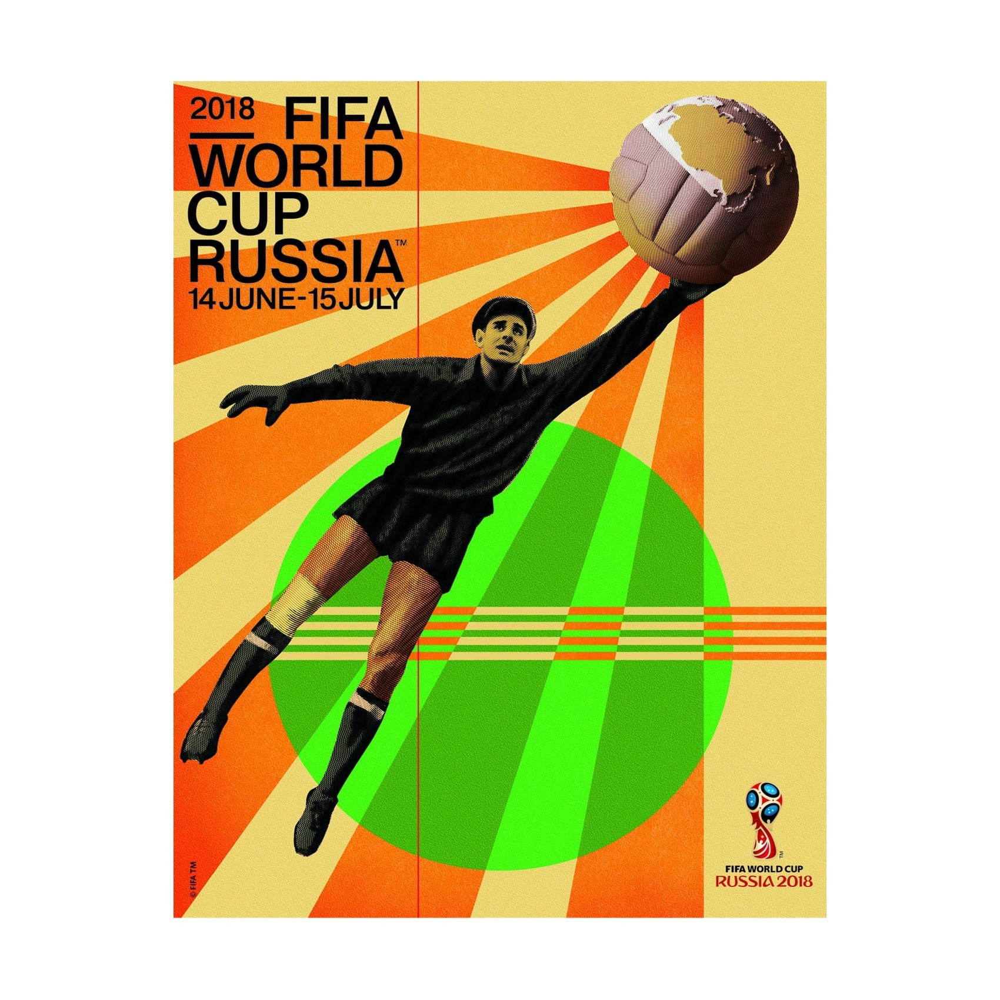

Official Poster
The official 2018 FIFA World Cup poster was designed by renowned Russian artist Igor Gurovich.
The poster features the legendary Soviet goalkeeper Lev Yashin, the only goalkeeper to ever win the Ballon d'Or. He is depicted in his signature black kit and cap, reaching for a football.
Gurovich drew inspiration from Russian Constructivism of the late 1920s and 1930s, specifically works by Dziga Vertov and the Stenberg brothers.
Combines a vintage leather ball from Yashin's era with a globe showing the Russian landmass as seen from space, celebrating Russia's history in space exploration.
Common in Constructivist art, these rays symbolize the energy of the tournament.
The green circle represents the pitches of the 12 stadiums across 11 host cities.

Igor Gurovich
Igor Gurovich is a highly influential graphic designer and artist, recognized as a "cult figure" in post-Soviet design. Best known internationally for designing the official 2018 FIFA World Cup poster, his work is defined by a deep engagement with cultural institutions, experimental typography, and the legacy of Russian Constructivism.
Graduated from the Stroganov Moscow State Academy of Arts and Industry with a specialization in automobile design.
He is a co-founder of several prestigious design bureaus, most notably Ostengruppe (founded in 2002), as well as Arbeitskollektiv and Zoloto.
He is an associate professor and academic director at the HSE Art and Design School, where he currently leads a new international campus in Yerevan, Armenia.
His practice is centered on collaborations with museums, theaters, and music festivals. He has designed for the Moscow International Film Festival, the Kremlin Cup, and the Russian Olympic team.
Gurovich often draws from historical Russian art movements, aiming to make their visual language modern and relevant. His work frequently features bold geometry, playful artifacts, and intricate typographic structures.
He is a member of the elite Alliance Graphique Internationale (AGI) and has received numerous honors, including the Grand Prix at the Golden Bee Global Biennale of Graphic Design.
His work is regularly featured in major galleries like the Winzavod Contemporary Art Center and showcased on platforms like Typo/Graphic Posters.